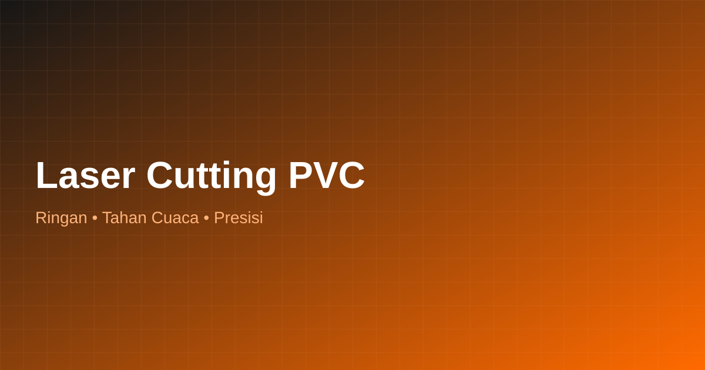

PVC (Polyvinyl Chloride) ringan, tahan air, dan tahan cuaca sehingga cocok untuk signage outdoor, partisi ringan, hingga dekorasi yang membutuhkan ketahanan terhadap kelembapan. Kami melayani laser cutting PVC dengan hasil presisi dan rapi.
💬 WhatsApp Jasa Laser Cutting
PVC sheet sering dipilih untuk kebutuhan signage outdoor, papan informasi, partisi ringan, hingga elemen dekorasi karena bobotnya ringan namun cukup kuat dan tahan terhadap kelembapan dan cuaca. Jasa Laser Cutting menyediakan layanan pemotongan PVC dengan presisi tinggi sesuai pola desain Anda.
Material ini juga sering digunakan untuk huruf timbul ringan, papan nama, dan elemen partisi dekoratif yang tidak memerlukan kekuatan struktural tinggi namun tetap membutuhkan tampilan rapi dan presisi.
PVC tahan terhadap kelembapan, cocok untuk aplikasi semi-outdoor.
Bobot ringan memudahkan instalasi pada dinding atau partisi.
Ideal untuk papan informasi, signage toko, dan huruf timbul ringan.
Potongan motif untuk partisi ruangan dengan tampilan estetik.
Proses pemesanan yang mudah dan transparan dari konsultasi hingga pengiriman.
Hubungi tim kami via WhatsApp, kirim desain (CDR/AI/DXF) atau referensi gambar yang Anda inginkan.
Kami hitung estimasi biaya, ketebalan, dan jenis material sesuai kebutuhan proyek Anda.
Mesin laser cutting presisi tinggi mengerjakan potongan sesuai ukuran dan desain yang disepakati.
Hasil dicek kualitasnya, dikemas rapi, lalu dikirim atau diambil langsung ke lokasi Anda di Jakarta & Tangerang.
Beberapa pertanyaan yang sering ditanyakan calon pelanggan Jasa Laser Cutting terkait laser cutting pvc.
PVC cukup tahan terhadap kelembapan dan cuaca ringan, sehingga sering digunakan untuk signage semi-outdoor. Untuk penggunaan outdoor jangka panjang, konsultasikan ketebalan yang sesuai dengan tim kami.
Bisa. Kami dapat memotong PVC sheet menjadi panel partisi dengan motif sesuai desain yang Anda inginkan.
Ketebalan PVC bervariasi tergantung kebutuhan aplikasi. Silakan konsultasikan kebutuhan Anda agar kami sarankan ketebalan yang sesuai.
Jelajahi layanan lain dari Jasa Laser Cutting Indonesia yang mungkin Anda butuhkan.
Konsultasikan kebutuhan signage atau partisi PVC Anda dengan tim kami untuk hasil terbaik.
💬 WhatsApp Jasa Laser Cutting